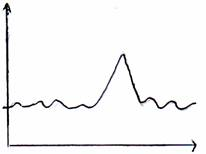
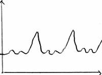

L'hyperthermie
Definition
La fievre ou pyrexie est un syndrome caracterise par l’elevation de la temperature du corps et de l’acceleration du pouls.
Physiopathologie
Liberation de substances pyrogenes (pyrogene : provoque de la chaleur).
Stimulation des centres : hypothalamus.
Liberation de corps chimiques : prostaglandines
Les prostaglandines vont modifier le fonctionnement du thermostat: thermogenese.
Signes cliniques
Malaises.
Cephalees.
Douleurs generalisees.
Courbatures.
Les phases de la fievre
Le mode d’acces
Le mode d’acces peut etre :
Aigu : la temperature augmente de faeon brutale de 37e a 40e environ.
Insidieux : la personne ne sait pas qu’elle a la fievre, la fievre s’est etablit progressivement.
Agressif : la personne sait quand la fievre commence, la fievre augmente progressivement pour atteindre un seuil, l’acme.
La periode d’etat
Il existe differentes fievres demontrees par les courbes :
Fievre en clocher : elevation de la temperature brutal et irreguliere.

Fievre intermittente : succession d’acces febrile avec retour a la normale entre les acces.

Fievre en lysis : disparition lente et progressive sur plusieurs jours.
Les signes associees a la fievre
Les frissons : present generalement au debut de l’etat febrile. Sensation de froid. C’est a ce moment qu’il faut faire une hemoculture.
La sueur : evaluer la quantite et l’odeur.
Les douleurs : cephalees, myasthenie, myalgie (courbature) et arthralgie.
L’asthenie ou fatigue : variable en fonction de l’ege, de la pathologie, de la duree de la fievre.
Les elements de gravite d'un etat febrile
L’etat de conscience et neurologique
L'etat de la fonction cardiaque.
L'etat de la fonction respiratoire.
Soins infirmiers
Surveillances
La temperature et de la courbe de temperature.
La tension arterielle et les pulsations, tachycardie, marbrure due a une hypovolemie.
Les frissons.
La fonction respiratoire. Norme : 16 a 20 respiration.min-1.
Sueurs.
Oligurie : hydratation, en faisant le pli cutane.
Actions
Ne pas couvrir chaudement la personne.
Faire des apports hydriques.
Humidifier la piece.
Assurer les soins d’hygienes corporelles : toilette frequente, change, soin de bouche.
Augmenter l’apport calorique.
Traitements
Il y a 3 medicaments particuliers appeles : antipyretique.
Paracetamol : antalgique.
Acide acetyle salicylique : aspirine.
Ibuprofene : anti-inflammatoire non steroedien.
Voir aussi :
La thermoregulation
L'infection
Les defenses de l'organisme
Module Infectieux